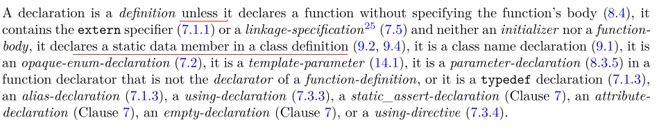
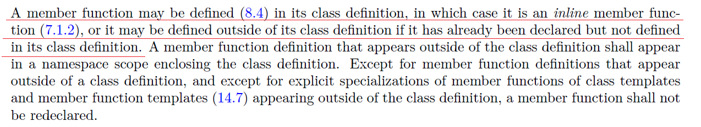

关于 static 关键字的一点思考
唔...以前写过这个话题，但是不完善，改一改。
关于 static 的作用就不赘述了(文件域的static, 函数内的static, 类里面的static ...)，可以参考[1]，这里只想说C++里面的静态成员变量和静态成员函数的一些gotcha。
# 1,
大家都知道，在C++里面，静态成员变量(class static member variable)是不能直接在类里面定义的（听说C++17可以了，但是那个另说），如果你在里面定义了，那么C++标准里面说了，那不叫定义，那只是"初始化"(initialization)：

如果要真正地定义一个静态成员变量，那么必须单独在类外面做一个定义。
具体来说，比如这个代码(是的，我们企图在写一个单例)：
xclass Singleton {private: static Singleton * singleton;private: Singleton() { }public: static Singleton *getinstance() { if(singleton == NULL) { Singleton::singleton = new Singleton(); } return singleton; }};int main() { Singleton * p = Singleton::getinstance(); return 0;}是不能编译通过的，会有 linker error (unsolved external `singleton`)。正确的姿势应该是:
xxxxxxxxxxclass Singleton {private: static Singleton * singleton;private: Singleton() { }public: static Singleton *getinstance() { if(singleton == NULL) { Singleton::singleton = new Singleton(); } return singleton; }};Singleton * Singleton::singleton = nullptr; //多加了这个定义int main() { Singleton * p = Singleton::getinstance(); return 0;}咋一看，双重定义了，但是其实不是，static Singleton * singleton; 这一行其实并不是定义(请看上面的c++标准)，后面的Singleton * Singleton::singleton = nullptr;才是。初学者看上去会觉得有点奇怪(特别是Java系的或者是从C过来的同学)，但是事实就是这样。
为什么
我曾经企图弄清楚这种语言设计背后的原因，根据我从网上收集到的信息和跟一些网友的讨论，解释如下:
这个可以从源自 C 语言的"分离编译模型"找到答案。从 C 语言设计之初，他的编译都是"分离的"，也就是说，多个源文件被分开编译，然后再由链接器链接在一起，这种模型一直延续至今。我们通常会写很多很多的cpp文件(.cpp)和头文件(.h)，然后我们可以选择一个一个地去编译那些 .cpp 文件:
xxxxxxxxxx$ gcc -c file1.cpp file2.cpp ... 然后得到file1.o，file2.o...等一些 OBJ 文件，最后再用链接器将他们链接在一起。
这种模型有一个隐喻，就是，各个编译单元对其他编译单元（compilation unit)可以一无所知。一个具体的例子是:
xxxxxxxxxx//file1.cppint c ; xxxxxxxxxx//file2.cppint c; xxxxxxxxxx//main.cppint main() {}当我们用上面所说的方法将 file1.cpp，file2.cpp 和 main.cpp 分别编译成 OBJ 文件的时候，是没有编译错误的，即使发生了多重定义，因为分离编译模式使得各个编译单元对其他编译单元一无所知。但是，当你用链接器将编译出来的 file1.o ，file2.o 和 main.o 链接成一个可执行文件的时候:g++ -o a.out file1.o file2.o main.o，就会有 Erorr: multiple definition 'c' ...的错误。
那么，这个分离编译模型对上面所说的类静态成员变量有什么影响呢？
要知道，定义一个变量就等于给它分配了一块内存空间。静态成员变量(static member)也是。但是，静态成员变量是所有的实例(instance)共有的，所以它应该有且只有一块内存空间。可是一个类的声明通常是放在一个头文件中的，而一个头文件可以被包含多次，分成不同的编译单元编译，各个编译单元对另外的编译单元又是一无所知的，所以编译器这时候就不知道怎么处理这个static member了。假如编译器在类声明的时候给这个static member分配了内存空间（承认了这个定义，并且采取了措施），那么，假如包含这个类的头文件又被其他编译单元包含，则，这个static member就会被再次分配一次内存。这样一来，static member 就不static了。
所以，为了解决这个问题，C/C++语言规定，在编译这个类的时候，对类里面的static member不做处理（定义），程序员应该在另外一个地方（一般是单独的.cpp文件），单独地定义这个static member。
多说一句
那么Java 为什么就可以这样呢？为什么Java就不用对static member单独定义呢？
很简单，因为Java都是独立的，自己的虚拟机，只有Java语言编译出来的东西才能在上面跑。即使Java按照上面所说的编译流程编译，发现了重复的static member，它只需要把这些重复的对象整合成一个即可（依靠它的runtime mechanism）。所以，在语言（语法）层面上，Java没有这样的问题（不需要另外对static member进行单独定义）。C#也是。
再多说一句
C++中 singleton 一般这样写简介一些，上面的略繁琐.
xxxxxxxxxxclass Singleton {private: Singleton(){ } Singleton(Singleton&); Singleton& operator=(Singleton&);public: static Singleton& getInstance(){ static Singleton instance; return instance; }};# 2,
说完了类静态成员变量(class static member variable)，说类静态成员函数(class static member function)。
刚刚说到，类静态成员变量是需要在类外面单独定义的。但是，类成员函数却不是。这很奇怪（特别是对于有函数式编程经验的人来说(函数在那些语言里面是 first-class value)），因为既然在分离编译的模型下类静态成员变量必须单独定义，为什么函数就不需要？
关键就是，在 C++ 里面，直接在类内部定义的函数是隐式内联(inline)的:

这个怎么解释我们的疑问呢？
对于普通函数来说，他的实现方式有两种：1) inline 在头文件里面，2) 声明(declare)在头文件(.h)里面，然后在 .cpp 文件里面定义。
现在 类静态成员函数 因为是隐式内联的，所以跟上面的 1) 一样。所以，既然分离编译模型对普通函数没有影响，那么他对静态成员函数也没有影响。(三段论)
那么，为什么对普通函数没有影响呢？... 这个就不纠结了。
# 3,
关于类的静态成员讲得差不多了，下面多讲一点其他的。
假设有如下源文件及其代码定义，请问输出结果是什么？
xxxxxxxxxx//header_1.husing namespace std;class A { public: void func() { cout << "FIRST" << endl; }}; xxxxxxxxxx//header_2.husing namespace std;class A { public: void func() { cout << "SECOND" << endl; }}; xxxxxxxxxx//part_1.cppvoid part1() { A a = A(); a.func();} xxxxxxxxxx//part_2.cppvoid part2() { A a = A(); a.func();} xxxxxxxxxx//main.cppextern void part1();extern void part2();int main() { part1(); part2();}注意 header_1.h 和 header_2.h 里面的类名/函数名是相同的，只是函数的实现稍微有所不同。
Well, 如果在我的 Ubuntu 16.04, gcc 5.0 上用 gcc -o a.out main.cpp part_1.cpp part_2.cpp来编译，输出结果是：
xxxxxxxxxx$ ./a.outFIRSTFIRST在 Windows 上用 VS 2013 编译结果也是一样。为什么 part_2.cpp 明明 include 的是 header_2.h，但是输出的确实 FIRST 呢？因为这个是"未定义行为"(Undefined Behavior, UB)，它违反了C++的One Dedifinition Rule ：
There can be more than one definition of a class type (Clause 9), enumeration type (7.2), inline function with external linkage (7.1.2), class template (Clause 14), non-static function template (14.5.6), static data member of a class template (14.5.1.3), member function of a class template (14.5.1.1), or template specialization for which some template parameters are not specified (14.7, 14.5.5) in a program provided that each definition appears in a different translation unit, and provided the definitions satisfy the following requirements. Given such an entity named D defined in more than one translation unit, then
- each definition of D shall consist of the same sequence of tokens; and
- in each definition of
D, corresponding names, looked up according to 3.4, shall refer to an entity defined within the definition ofD, or shall refer to the same entity, after overload resolution (13.3) and after matching of partial template specialization (14.8.3), except that a name can refer to aconstobject with internal or no linkage if the object has the same literal type in all definitions ofD, and the object is initialized with a constant expression (5.19), and the value (but not the address) of the object is used, and the object has the same value in all definitions ofD; and- in each definition of
D, corresponding entities shall have the same language linkage; and- in each definition of
D, the overloaded operators referred to, the implicit calls to conversion functions, constructors, operator new functions and operator delete functions, shall refer to the same function, or to a function defined within the definition of D; and- in each definition of
D, a default argument used by an (implicit or explicit) function call is treated as if its token sequence were present in the definition ofD; that is, the default argument is subject to the three requirements described above (and, if the default argument has sub-expressions with default arguments, this requirement applies recursively).- if
Dis a class with an implicitly-declared constructor (12.1), it is as if the constructor was implicitly defined in every translation unit where it is odr-used, and the implicit definition in every translation unit shall call the same constructor for a base class or a class member ofD.
(引用自C++ Spec，重点部分已经加黑)
# 4,
C/C++这种分离编译的模型，会带来很多各种各样“细微”的影响，比如有关他的类成员函数模板。To add more.
Reference
Yubin Ruan, last modified in 2017-02-24
Comments powered by disqus